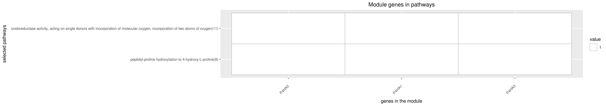

|
|
Modules were tested for enrichment in functional and pathway annotations using two complementary approaches:
1. To select a small number of specific / non-redundant annotations for each module, a regression-based approach was used;
2. To obtain the complete set of enriched annotations, an extension of Fisher’s exact test that takes annotation bias into account was employed (Wallenius’ non-central hypergeometric distribution).
|
1Regression coefficient
2Fisher’s exact test nominal P-value
3Annotation source (Reactome, GO biological process (BP), molecular function (MF) and cellular component (CC))
4GO category or Reactome pathway
5High-level branch of annotation tree

11Nominal enrichment p-value (Wallenius’ noncentral hypergeometric distribution)
2FDR corrected p-value (Benjamini-Hochberg)